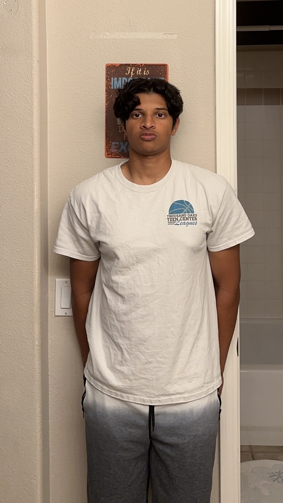

[01]
Gesture-controlled drone
Exploring a more intuitive way to fly. An independent project using hand movement to control a Ryze Tello, combining flight, physical interfaces, and hands-on experimentation.
Ryze Tello · Hardware · Motion control

Bringing scientific understanding and practical skills together to build useful things across hardware and software.

I'm Seth Wijeratne, a biophysics student at UCLA. I'm interested in the connections between physics, biology, and engineering — and in turning what I learn into things I can build, test, and improve.
My interests span robotics, medical devices, biotechnology, and software. Independent projects have taken me from gesture-controlled flight to language-processing tools. I want to keep gaining practical experience through projects, research, and internships.
I'm working toward my B.S. in Biophysics, with an expected graduation in 2028.
Let's get in touchExperiments.Projects.
Exploring a more intuitive way to fly. An independent project using hand movement to control a Ryze Tello, combining flight, physical interfaces, and hands-on experimentation.
Ryze Tello · Hardware · Motion control
A Python web application that makes patterns in language easier to explore. Built an interactive text-analysis workflow with modules for stemming, context, mismatches, and analysis.
Python · Flask · spaCy · NLP
text.analyze()WORKFLOW ILLUSTRATION
↳ stems
↳ context
↳ patterns
The interests and hobbies
that shape who I am.
I enjoy the game and the process of getting better: breaking down mechanics, finding a rhythm, and putting in the repetitions.

BasketballA growing foundation across software, hardware, service, and leadership.
Python, C/C++, JavaScript, HTML/CSS, Flask, and spaCy.
Arduino and ESP32, soldering, drone projects, and electronics.
200+ hours as a hospital concierge, clinic volunteering, and Explorers leadership.